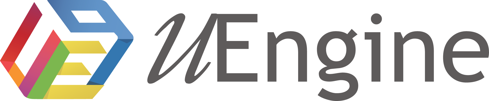

문서는 Rev.7, 실제 업무는 이미 다른 길 — 어느 쪽이 맞는지 아무도 확신하지 못합니다.
첨부파일로 오가는 개정 — 누가 언제 무엇을 승인했는지는 메일함을 뒤져야 나옵니다.
심사가 다가오면 RACI 표, 절차서, 승인 이력을 몇 주에 걸쳐 다시 꿰맞춥니다.
프로세스가 문서와 머릿속에만 있는 조직 — 퇴사 한 번에 업무가 멈춥니다.

이름·업무 유형만이 아니라 수행 절차, RACI 담당까지 속성째 따라옵니다.